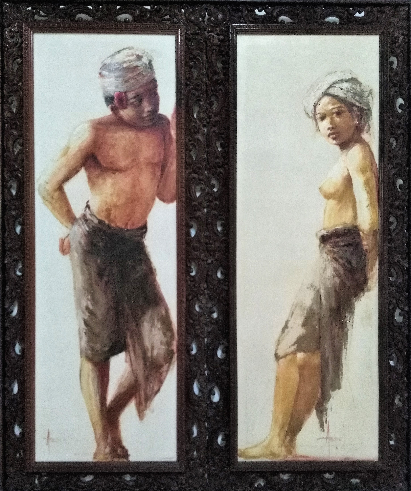

Que dire ? Je comptais marquer deux trois trucs à l'arrache dont je voulais me souvenir. Le problème c'est que Sylvain a écrit sa partie en premier et que ça me fiche la pression. Alors hauts les coeurs et en avant !
Normalement, le plan c'était d'écrire au fur et à mesure sur un petit carnet tous les trucs qui me marquent pour ne pas les oublier. Le gros problème de ce genre de voyage, c'est que tu te blases. Au début c'est les étoiles dans les yeux puis ça devient du "quoi ? Encore un temple qui a demandé des dizaines d'années de travail, une main d'oeuvre considérable et dont les ornements sont faits à la main ? Mouais...". La blase quoi. Donc non, impossible de se laisser aller ! Il faut continuer à apprécier les très beaux moments que nous avons la chance de vivre et pour ça, se souvenir de cette sensation de découverte.
Alors voyons, quand je pense à l'Indonésie, le premier truc qui me vient c'est les sourires. On a récolté tellement de sourires, de bonjours, de checks avec les enfants qu'on ne va plus pouvoir s'en passer. Les gens ici sont adorables et extrêmement souriants. Un peu plus à Java qu'à Bali, la rançon du tourisme de masse sûrement !
Je voudrais me souvenir des fleurs, qui sont partout, et qui sont tellement belles. Mais également de leur façon de les disposer pour les offrandes dans des petits paniers sur le sol (pour les mauvais esprits), sur n'importe quel objet dans la rue (pour les bons esprits) et sur les petits temples présents partout (pour les dieux).
Je voudrais me souvenir de ces villes très vertes, très animées par les oiseaux à l'entrée de chaque maison, des poules, chiens et chats qui gambadent dans chaque rue. Et des enfants qui jouent de partout et qui peuvent sortir d'une maison pour te chanter une chanson. Ou arrêter toute activité et rester bouche bée devant Sylvain qui fait 8 têtes de plus que tout le monde. Je voudrais me souvenir d'une vraie vie de quartier, des ruelles et des maisons ouvertes où les gens échangent et partagent leurs vies.
Je voudrais me souvenir de Bromo, et de cette ballade complètement seuls au petit matin, avec cette végétation rase et la brume qui se dissipe au fur et à mesure. Cette sensation de paix !
Je voudrais me souvenir de la certitude d'avoir un pancake à la banane chaque matin et au moins un jus de pastèque frais par jour. Du vrai goût des mangues. Des recettes du cours de cuisine de Wayan (Mais pourquoi j'ai pas pris de notes ??)
Je voudrais me souvenir aussi de la darkface de Java et Bali : la pollution. Les déchets sont absolument partout, et franchement ça fait bien flipper. Décharges à ciel ouvert, du plastique à toute les sauces, quelques poubelles de tri à peine utilisées. Le feu pour brûler les déchets quels qu'ils soient, et les eaux usées qui finissent parfois à la mer. Le fleuve le plus pollué du monde se trouverait à Java, et encore trop peu d'initiatives locales sont mises en place. C'est donc une belle cata écologique, et on ne va pas se leurrer, le tourisme n'y est pas pour rien non plus ! Mais il y a de plus en plus de réflexions et mobilisations autour de cette question, et on peut espérer de belles initiatives. En parallèle côté touriste, il y a de chouettes actions, comme adventurebagcrew qui est très suivi en Indonésie. Ca consiste à prendre un sac et ramasser les déchets sur les endroits visités. Soyons résolument positifs et surtout agissons !
Je voudrais me souvenir de la circulation, ce joyeux bordel, mais qui est finalement assez fluide une fois que tu piges que tu peux doubler par la droite, par la gauche et en roulant sur le trottoir. Mais aussi de la sensation de jouer ta vie quand tu décides en tant que piéton de traverser la route. Et enfin, de leur façon de remplacer un gros break familial par un scooter. Bien sûr que trois enfants, leurs parents et les bagages logent sur un scoot ! Et bien sûr que tu peux rentrer de l'école primaire en conduisant ton 125cc... à 8 ans.
Je voudrais me souvenir de leur façon de faire de chaque évènement une fête. D'avoir des festivals religieux, de quartier, de famille, tout le temps.
Je voudrais me souvenir du baptême de plongée, que j'ai tellement redouté mais qui était absolument fantastique.
Je voudrais me souvenir des gens recontrés, des paysages, des potos avec qui on a pu partager un moment.
Merci l'Indonésie, c'était bien cool de te rencontrer, on a hâte de te revoir !
Voici quelques pensées qui serviront de bilan personnel sur nos 5 semaines passées en Indonésie. Déjà, c'est un pays que j'avais envie de voir depuis longtemps. Mais bien entendu, je m'en faisais une fausse idée. Je le voyais plutôt comme un archipel d'îles toutes plus tranquilles et paradisiaques les unes que les autres. En se renseignant quelque peu, évidemment, on comprend vite que ce n'est pas le cas. Mais il reste dur de se départir de son fantasme en lisant quelques chiffres ou en visionnant quelques images sur notre bonne vieille toile. Ensuite, comme je l'ai dit, c'est un pays multiple du fait de ses nombreuses îles. Et je suis bien conscient que voir Java et Bali ne constitue en rien l'intégralité de l'Indonésie. Quid de Florès, Sumatra, Sulawesie et toutes les autres ? Il nous faudra y revenir alors :D !
Java la grande, Java la très peuplée. Voilà les premières idées qui me viennent en tête quand je pense à cette île. Effectivement, j'ai été surpris de la densité de population. Tellement de gens sur les routes, dans des villes gigantesques, écrasantes (je pense à Jakarta, Bandung, Bogor...). Et grande parce qu'on imagine pas de tels temps de trajet entre les différents lieux. Bon déjà les distances sont assez importantes, mais surtout le traffic surchargé rend chaque voyage d'une longueur inattendue et imprévisible.
Mais Java, encore heureux, ne se limite pas à ça. Déja nous avons trouvé les gens très souriants. Et ça, quand t'es fatigué, en galère ou perdu, ben ça fait plaisir ! Ca met un peu de baume au coeur. Et ce n'est même pas feint, puisqu'ils sont aussi très gentils. Alors oui, parfois, dans les lieux touristiques, ne soyons pas naifs, c'est une aide intéréssée. Mais nous avons parfois eu des discussions avec des locaux qui souhaitaient juste papoter un brin, rien de plus. Parce qu'ils ont déjà un métier, de quoi vivre, qu'on soit là ou pas. Et ça a un côté plaisant de se sentir spectateur de cette routine, comme de passage. Au contraire des lieux plus touristiques où leurs vies s'organisent pour nous accueillir en tant que visiteurs.
Et on en a pris plein les mirettes aussi. Que de beaux paysages, magnifiques même. J'ai encore le souvenir endormi du Bromo à l'aube, un paysage onirique et brumeux. Et ce n'est qu'un parmi tant d'autre.
Enfin, je me dois de me souvenir de la philosophie originale des javanais, "Kejawen", tellement celle-ci m'a intriguée et intéressée. Différent de ce que j'ai pu voir ailleurs, mais très sage pour autant.
Bien entendu il y a aussi de gros problèmes sur cette îles. La gestion des déchets est faible voire inexistante. Il n'y a aucune infrastructure pour véritablement traiter ce que ces millions d'habitant jetent. Et au-delà de ce déficit de service publique, on comprend vite aussi qu'il y a un problème de mentalité, d'éducation. Il n'est pas rare de voir les gens jeter leurs déchets dans la rue, ou dans la rivière, et ça fait mal au coeur. Sans parler des dépotoires à ciel ouvert si souvent croisés.
Enfin, et même si cela peut sembler évident aux plus avertis, il y a la pauvreté. C'est, une fois de plus, une société aux inégalités exagérement grande. Le modèle se répète, avec les mêmes conséquences à la clé. Et on a était largement épargnés de voir tout ça, nous touristes, puisque très peu au contact des populations les plus démunies. Mais on a quand même ce petit arrière goût d'injustice au final.
Je plaçais beaucoup d'attente sur Bali, sans doute victime de l'image vendue pour attirer les touristes (c'est bien normal). J'imaginais un île sauvage, verdoyante, avec encore de nombreux paysages exceptionnels et des locaux accessibles et curieux de nous voir. L'image de carte postale, une plage superbe, désertique avec tout juste d'activité humaine pour pas se sentir Robinson. Authentique quoi ! Mais si c'était le cas il y a quelques dizaines d'années, maintenant le tourisme est bien présent et bien organisé. Les locaux en ont vu passer des européens, des français même. Certains locaux baragouinent notre langue de temps en temps, pour dire !
Cela dit Bali a quoi offrir en expérience tout de même. Les montagnes de Mundunk ou les rizières de Sidemen restent encore peu atteintes par le tourisme de masse (mais comme je l'ai déjà dit, n'espérez pas être tout seul non plus !). Et je pense que bientôt d'autres endroit encore plus secrets seront atteints par des touristes fuyant le mercantilisme. Même si l'île est petite (rien à voir avec Java, ouf !), bien des coins restent à découvrir.
Le balinais, à notre grand désespoir, n'est pas aussi souriant que le javanais. On s'était vraiment habitué à cette distribution naturelle de sourire, et nous sommes un peu frustrés sur ce point. On s'y fait vite quand c'est agréable !
Sauf exception faite (le bord de plage de Lovina ou d'autres lieux touristiques), il m'a semblé que le balinais marchande moins aussi, moins férocement en tout cas. Ou peut-être suis-je trop naïf sur ce point ?
Les balinais sont, je pense, plus conscient du potentiel touristique de leur île, et donc il me semble font plus attention aux déchets. On est encore très loin d'autres pays, mais comparé à Java, il y a un mieux. Et l'île, bénéficiant également d'un tourisme plus important (pour un plus petite population) est de fait plus riche et donc possède plus de moyen probablement (pour moins de déchets ?).
Sur le point de la richesse d'ailleurs, les inégalités m'ont semblé moins marquées ici, peut-être n'est-ce que le fruit de notre itinéraire plus touristique ?
Et on l'a peut-être pas assez dit, mais qu'est-ce qu'il y a comme temples !!!
Au revoir Java, au revoir Bali, ce fût un plaisir de commencer notre voyage par vous. On reviendra pour vos soeurs, alors ne soyons pas tristes.
